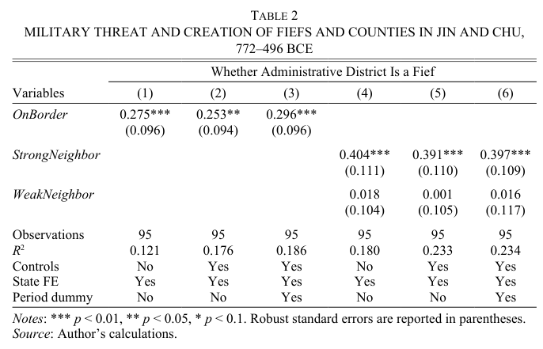
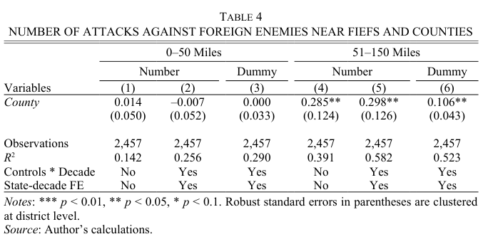

PSCI 2227: War and State Development
April 15, 2026
Monday. Brewer on the British fiscal-military state.
Today. Chen on pre-imperial China.
Max Weber (remember him!?) laid out the ideal-type bureaucracy:
“Bureaucracy” in this sense isn’t just red tape
Administration as more systematic, less idiosyncratic
How does bureaucracy help reduce agency problems?
Bureaucracy makes the loyalty-competence tradeoff less severe
While solving some agency problems, bureaucracy can create others
Discussion question
What aspects of Vanderbilt are more or less “bureaucratic” in Weber’s sense — hierarchical, rule-bound, oriented more around process than people?
And what are the upsides and downsides of the more bureaucratic parts of the Vanderbilt experience, compared to the less bureaucratic ones?
Why did some states develop bureaucratic administration before others?
To what extent, or in which cases, was warfare an impetus to bureaucratize?
Once a state has bureaucratized, how does that affect its approach to war?
771 BCE: Zhou collapse
770–481 BCE: Spring and Autumn period, gradual fragmentation
481–221 BCE: Warring States period, intense competition
221 BCE: Qin unification
Chen’s focus: Jin and Chu states
Fief
County (xian)
The fief is personal property; the county is a bureaucratic post
Foreign army invades the district. Does the local agent fight hard?
Fief holder
County magistrate
Fiefs are better defenders because of greater intrinsic incentive
Ruler orders an attack on an external enemy. Does the local agent go along?
Fief holder
County magistrate
Counties are more aggressive because the ruler can force participation
The ruler picks the contract before knowing which contingencies will arise
Core tradeoff:
Two predictions fall out:
Unit of analysis. Administrative district in Jin or Chu, 772–221 BCE
Dependent variable. Is the district a fief or a county?
Independent variable. Is the district on the state’s border?
Predicted relationships.

Border districts 25–30 percentage points more likely to be organized as fiefs
Table 3: bigger differences when neighbor is stable or strong
Unit. Same districts, observed by decade
Dependent variable. District-level aggressiveness
Independent variable. Is the district a fief or a county?
Predicted relationships.

No statistical difference in nearby attack propensity
Counties launch about 0.3 more faraway attacks per decade
Appendix results: avg distance 16–20 miles higher for counties
Bureaucratization, its upsides and downsides
Chen’s fief vs. county framework
Evidence from Jin and Chu
Friday, 11:59pm. Final research paper + revision memo due.
Evaluation extra credit. 12 filled out as of last night — we need 8 more for +0.5, 13 more for +0.75.
Monday 4/20. Final exam review — I’ll post a study guide no later than that class, hopefully even earlier.
Thursday 4/23, 9:00–11:00am. Final exam.